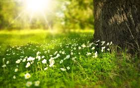

Vart hittar man GreenGroves?
Våra produkter finns hos utvalda återförsäljare runt om i Sverige samt via vår digitala plattform där du enkelt kan läsa mer om vårt sortiment.

Ekologiska produkter produceras med omtanke om både människor och natur. De innehåller färre tillsatser och är ett bättre val för en hållbar livsstil.
Våra produkter finns hos utvalda återförsäljare runt om i Sverige samt via vår digitala plattform där du enkelt kan läsa mer om vårt sortiment.